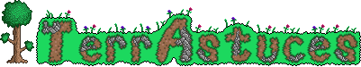

<mat-toolbar>
  <div id="centered">
    
  </div>

  <div id="right_nav">
    <button [hidden]="tokenService.getToken()" class="logButton" mat-flat-button color="grey"
      style="background-color: #555b6f; color: white" routerLink="/login">
      S'identifier
    </button>

    <button [hidden]="!tokenService.getAdminState()" mat-flat-button color="accent" (click)="toPendingTips()">
      Astuces en attente
    </button>
    <button [hidden]="!tokenService.getAdminState()" mat-flat-button color="warn" routerLink="admin/user-management">
      Gestion des utilisateurs
    </button>

    <button
      [hidden]='!tokenService.getToken()'
      mat-flat-button
      color="grey"
      style="background-color: #555b6f; color: white"
      (click)="toMyTips()"
    >
    Mes Astuces
    </button>
    <button [hidden]='!tokenService.getToken()' mat-flat-button color="grey"
      style="background-color: #555b6f; color: white" routerLink="/profile">
      Mon Profil
    </button>
    <button [hidden]="!tokenService.getToken()" class="logButton" mat-flat-button color="grey"
      style="background-color: #555b6f; color: white" matTooltip="Se déconnecter"
      (click)="disconnect()">
      <mat-icon>exit_to_app</mat-icon>
    </button>

  </div>

</mat-toolbar>

<div id="spacing" style="height: 85px"></div>
<div id="body">
  <router-outlet></router-outlet>
</div>